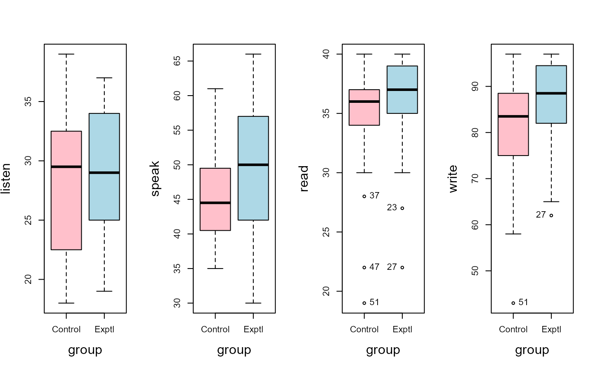
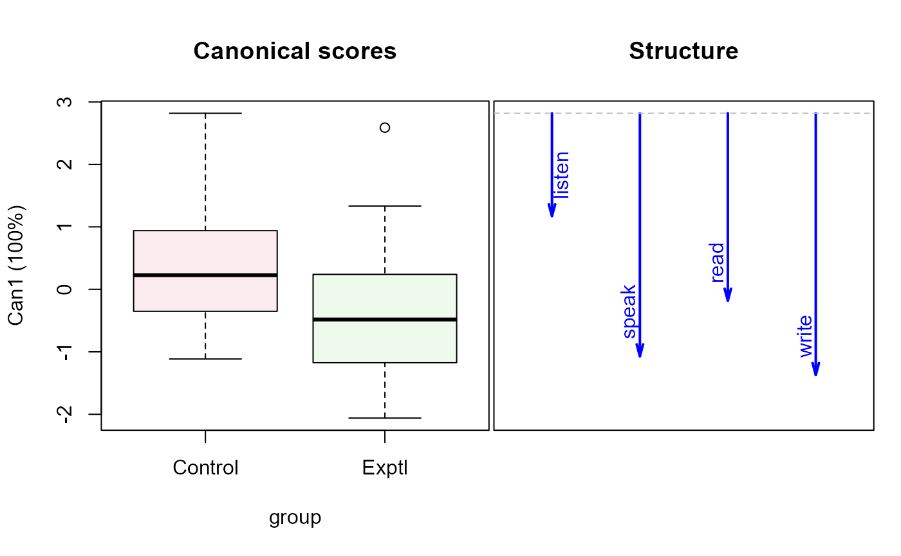
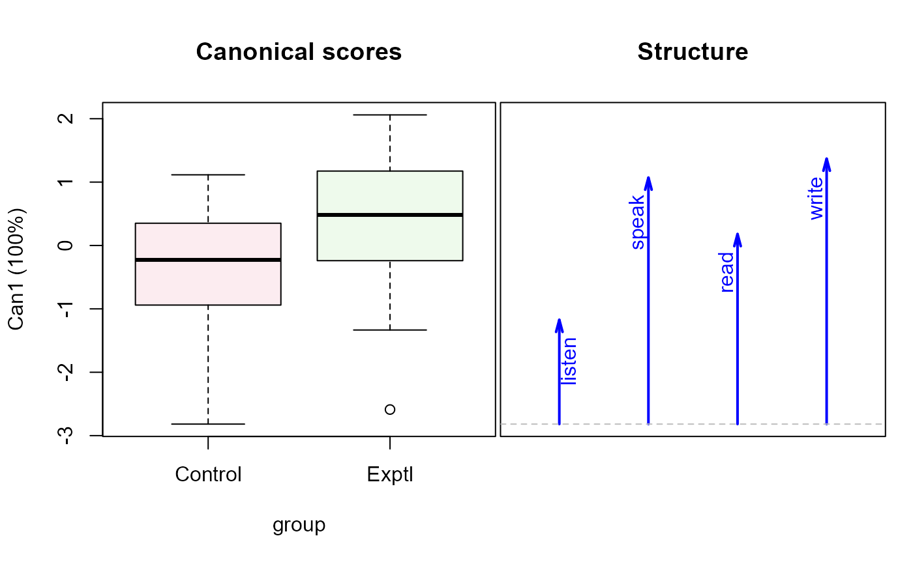

Postovsky (1970) investigated the effect of delay in oral practice at the beginning of second language learning. A control condition began oral practice with no delay, while an experimental group had a four-week delay before starting oral practice. The data consists of scores on language skills at the end of six weeks of study.
Students in this study were matched on age, education, former language training, intelligence and language aptitude.
Usage
data("oral")Format
A data frame with 56 observations on the following 5 variables.
groupGroup, a factor with levels
ControlExptllistenListening test, a numeric vector
speakSpeaking test, a numeric vector
readReading test, a numeric vector
writeWriting test, a numeric vector
Source
Timm, N. H. (1975). Multivariate Analysis with Applications in Education and Psychology. Wadsworth (Brooks/Cole), Exercise 3.12, p. 279.
References
Postovsky, V. A. (1970). Effects of delay in oral practice at the start of second language training. Unpublished doctoral dissertation, University of California, Berkeley.
Examples
library(car)
library(candisc)
data(oral)
# make some boxplots
op <- par(mfrow=c(1,4), cex.lab=1.5)
clr <- c("pink", "lightblue")
Boxplot(listen ~ group, data=oral, col = clr, cex.lab = 1.5)
Boxplot(speak ~ group, data=oral, col = clr, cex.lab = 1.5)
Boxplot(read ~ group, data=oral, col = clr, cex.lab = 1.5)
#> [1] "37" "47" "51" "23" "27"
Boxplot(write ~ group, data=oral, col = clr, cex.lab = 1.5)

#> [1] "51" "27"
par(op)
# view the data ellipses
covEllipses(cbind(listen, speak, read, write) ~ group, data=oral,
variables = 1:4,
level = 0.40,
pooled = FALSE,
fill = TRUE, fill.alpha = 0.05)

oral.mod <- lm(cbind(listen, speak, read, write) ~ group, data=oral)
Anova(oral.mod)
#>
#> Type II MANOVA Tests: Pillai test statistic
#> Df test stat approx F num Df den Df Pr(>F)
#> group 1 0.085586 1.1933 4 51 0.325
# canonical view
oral.can <- candisc(oral.mod) |> print()
#>
#> Canonical Discriminant Analysis for group:
#>
#> CanRsq Eigenvalue Difference Percent Cumulative
#> 1 0.085586 0.093596 100 100
#>
#> Test of H0: The canonical correlations in the
#> current row and all that follow are zero
#>
#> LR test stat approx F numDF denDF Pr(> F)
#> 1 0.91441 1.1933 4 51 0.325
summary(oral.can)
#>
#> Canonical Discriminant Analysis for group:
#>
#> CanRsq Eigenvalue Difference Percent Cumulative
#> 1 0.085586 0.093596 100 100
#>
#> Class means:
#>
#> [1] 0.30042 -0.30042
#>
#> std coefficients:
#> listen speak read write
#> 0.5689397 -0.7403339 -0.0060816 -0.7079937
# reflect the structure & scores to make them positive
oral.can$structure[, "Can1"] <- -1 * oral.can$structure[, "Can1"]
oral.can$scores[, "Can1"] <- -1 * oral.can$scores[, "Can1"]
plot(oral.can, var.lwd=2)
